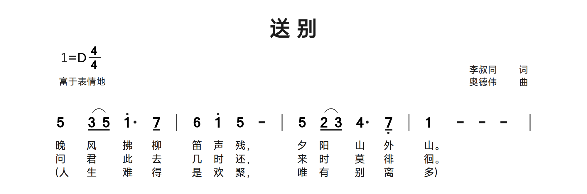
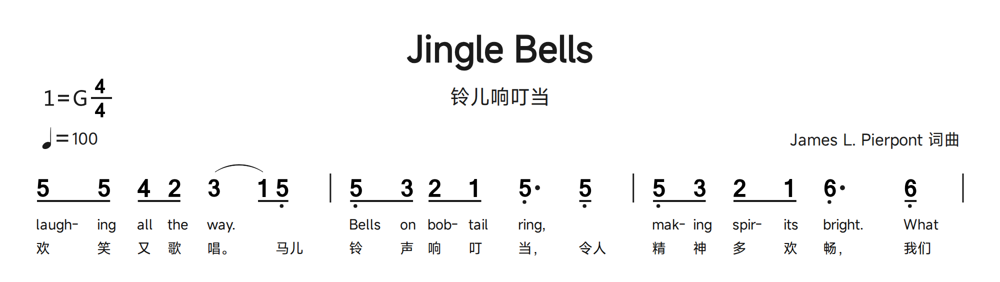
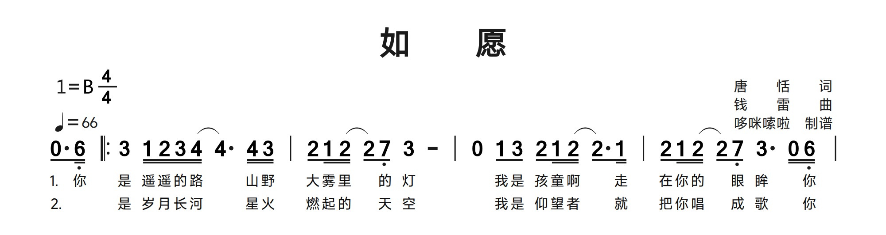
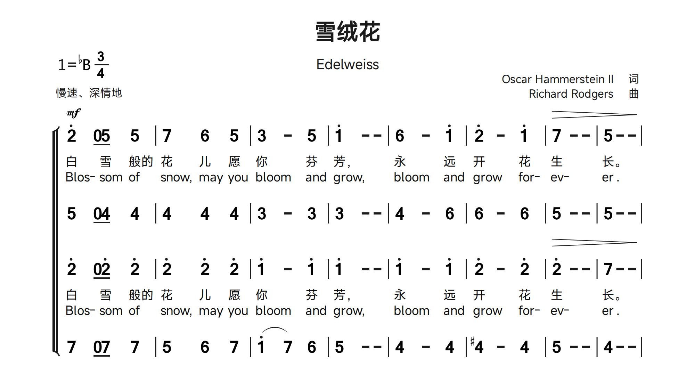
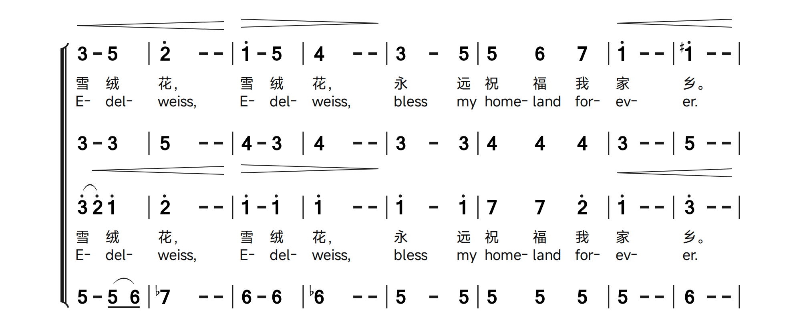

24. Lyrics: Chinese, English and mixed text
A C line belongs to the preceding music row; use matching voice numbers for multipart scores. Chinese characters ordinarily map one per note. Punctuation is recognized without becoming a separate sung syllable. @ skips a note; extension - strokes do not each need @. Join two Chinese characters with ~ to fit one note. Several C lines after one Q row supply separate verses.
Q: 1 2 3 4 | 5 - 6 7 |
C: 春 风 @ 来 花~儿 开 了
C: 第 二 段 词 也 能 写Begin a lyric line with a quoted label such as "1.". Use underscore _ for a space inside that legacy lyric-label notation. English words/syllables are separated by /; do not map individual letters to notes. / can also make mixed Chinese/English boundaries explicit. Use @ for unsung notes and inspect melismas rather than treating ordinary spaces as dependable English syllable delimiters.
Q: 1 2 3 4 |
C: "Verse_1" Sing/a/new/song
C: "2." 春/风/@/songCount sung slots, not visible characters
A Chinese character usually fills one sung slot; punctuation does not require its own note. @ advances past an unsung note, while ~ joins adjacent lyric characters into one slot. A continuation dash does not require another @. When a melody has two notes under one syllable, put the syllable on the first and skip the next as required by the source pattern. Check hidden 8 events and rests as well: they can affect alignment even though a digit is not visible. Add one verse first, then duplicate the C row and replace its words.
Verse labels, spaces and lyric parentheses
Quoted labels precede the lyric they describe, such as C: "1." ... or a label following initial @ skips. In the legacy label convention, use _ for an ordinary space: "Verse_1". Do not confuse these quotes with a note annotation in Q. Some library scores enclose an alternate lyric with (~...~); retain the delimiters when borrowing that pattern and inspect the printed punctuation. Ordinary prose spaces are for readability, not a dependable way of mapping each sung syllable.
English syllables and mixed languages
Use / between sung words or syllables. Split a polysyllabic word deliberately, for example Can-/a-/da, while retaining a visible hyphen where required. A hyphen in C is lyric text, not a musical continuation. @ skips an unsung slot and Chinese/English boundaries may be made explicit with /. The reference allows some separators to be omitted beside Chinese/@, but explicit separators are clearer when editing. Library scores also use ~ within English syllable grouping; inspect the complete pattern before simplifying it.
Chinese verses, skipped notes and a lyric enclosure
Both sung verses follow the same Q row. @ skips the second note of a slurred group. The third C row uses the legacy (~...~) lyric enclosure; this is lyric text/grouping, not a music slur.
bundled examples: Farewell.jps · source lines 17-20. Excerpt rendered with the Linux package font set; blank page space omitted. Download this JPS excerpt
JPS source
Q: 5 (3/ 5/) 1'. 7/ | 6 1' 5 - | 5 (2/ 3/) 4. 7,/ | 1 - - - |
C: 晚风@拂柳笛声残，夕阳@山外山。
C: 问君@此去几时还，来时@莫徘徊。
C: (~人生@难得是欢聚，唯有@别离多~)
Chinese joins and bilingual lyric rows
The Chinese text joins 马~儿 and 令~人 so each pair belongs to one lyric slot. The English line uses / to separate words/syllables and @ for unsung notes. Compare both under the same melody.
bundled examples: JingleBells.jps · source lines 14-16. Excerpt rendered with the Linux package font set; blank page space omitted. Download this JPS excerpt
JPS source
Q: 5/ 5/ 4/ 2/ (3 1/) 5,/ | 5,/ 3/ 2/ 1/ 5,. 5,/ | 5,/ 3/ 2/ 1/ 6,. 6,/ |
C: laugh- /ing /all /the /way~. @@Bells /on /bob- /tail /ring~, @mak- /ing /spir- /its / bright~. What
C: 欢笑又歌唱。@马~儿铃声响叮当，令~人精神多欢畅，我~们
English and French syllable alignment
Can- /a- /da gives three sung slots. A hyphen in a lyric is visible text, not a duration extension. Both C rows share the melody; the long final syllable does not require a new lyric entry for every continuation stroke.
bundled examples: O-Canada.jps · source lines 13-15. Excerpt rendered with the Linux package font set; blank page space omitted. Download this JPS excerpt
JPS source
Q: 3 - 5. 5/ | 1 - - 2 | 3 4 5 6 | 2 - - 0 |
C: O /Can- /a- /da~! Our/ home / and /na-tive/ land~!
C: Ô Can- /a- /da~! Ter- /re /de /nos /ai- /eus~,
Quoted verse labels after an initial skip
The pickup rest is skipped with @; then "1. " and "2. " label the verses. The library uses a full-width space in those labels. For a portable ASCII-space label, use the documented underscore convention.
bundled examples: As-Wished.jps · source lines 14-16. Excerpt rendered with the Linux package font set; blank page space omitted. Download this JPS excerpt
JPS source
Q: 0/. 6,// |: 3 1// 2// 3// (4// 4.) 4// 3// | 2/ 1// (2// 2/) 7,/ 3 - | 0 1/ 3/ 2/ 1// (2// 2/.) 1// | 2/ 1// (2// 2/) 7,/ 3. 0// 6,// |
C: @"1. "你是 遥遥的路 @山野大雾里@的灯 @我是孩童啊 @走在你的@眼眸 @你是 明月清风 @我是
C: @"2. "@是 岁月长河 @星火燃起的@天空 @我是仰望者 @就把你唱@成歌 @你是
25. Manual page breaks
Place the exact lowercase token [fenye] on its own line. It creates a new score page; it is not a note annotation. Keep the intended music systems and their lyrics together. Long source does not imply automatic musical reflow or automatic page-spanning slurs. Split/reopen slurs at the page boundary, inspect ending brackets and confirm that each exported page fits its margins.
Q: 1 2 3 4 ||
C: 第 一 页 词
[fenye]
Q: 5 6 7 1' ||
C: 第 二 页 词Choose a boundary after a complete system
Put [fenye] on its own line between complete systems. In a multipart score, include every Q part and associated C row before breaking. Close or intentionally split slurs and inspect ending/hairpin endpoints at the boundary. After adding a page, navigate both pages and review their lower margins. The source controls music-row and page boundaries; changing paper or font settings does not replace explicit musical pagination. The example below has two rendered page crops, not a single tall page.
Two systems separated by a manual page break
The first system ends before [fenye]; the next starts with a complete Q1-Q4 system. Both output pages are shown. Keep each system and its lyric rows together when choosing a boundary.
bundled examples: Edelweiss - Choir ChinEng.jps · source lines 29-47. Excerpt rendered with the Linux package font set; blank page space omitted. Download this JPS excerpt
JPS source
Q1: 2'&mf 0/ 5/ 8 5 | 7 8 6 8 5 | 3 - 8 5 | 1' - - | 6 - 8 1' | 2' - 8 1' | 7> - - | 5 - -! |
C1: 白@雪@般~的花@儿@愿你@芬芳，永@远开@花生长。
C2: Blos-/ @ som/ @ of/ snow~, @may/ @you/ bloom/ @and/ grow~, bloom/ @and/ grow/ @for-/ ev-/ er.
Q2: 5 0/ 4/ 8 4 | 4 8 4 8 4 | 3 - 8 3 | 3 - - | 4 - 8 6 | 6 - 8 6 | 5 - - | 5 - - |
Q3: 2' 0/ 2'/ 8 2' | 2' 8 2' 8 2' | 1' - 8 1' | 1' - - | 1' - 8 1' | 2' - 8 2' | 2'> - - | 7 - -! |
C3: 白@雪@般~的花@儿@愿你@芬芳，永@远开@花生长。
C4: Blos-/ @ som/ @ of/ snow~, @may/ @you/ bloom/ @and/ grow~, bloom/ @and/ grow/ @for-/ ev-/ er.
Q4: 7 0/ 7/ 8 7 | 5 8 6 8 7 | (1' 7) 8 6 | 5 - - | 4 - 8 4 | 4# - 8 4 | 5 - - | 4 - - |
[fenye]
Q1: 3<+ - 5 | 2' - -! | 1'> - 5 | 4 - -! | 3 - 8 5 | 5 8 6 8 7 | 1'< - - | 1'# - -! |
C1: 雪绒花，雪绒花，永@远祝@福@我家乡。
C2: E-/ del- /weiss~, E-/ del-/ weiss~, bless/ @my/ home-/ @land/ @for-/ ev-/ er~.
Q2: 3 - 3 | 5 - - | 4 - 3 | 4 - - | 3 - 8 3 | 4 8 4 8 4 | 3 - - | 5 - - |
Q3: (3' 2')< 1' | 2' - -! | 1'>++ - 1' | 1' - -! | 1' - 8 1' | 7 8 7 8 2' | 1'<+ - - | 3' - -! |
C3: 雪@绒花，雪绒花，永@远祝@福@我家乡。
C4: E-/ @del- /weiss~, E-/ del-/ weiss~, bless/ @my/ home-/ @land/ @for-/ ev-/ er~.
Q4: 5 - (5/ 6/) | 7$ - - | 6 - 6 | 6$ - - | 5 - 8 5 | 5 8 5 8 5 | 5 - - | 6 - - |

26. Practical editing and review checklist
- Choose a bundled sample close to the score: ordinary melody, symbols/grace notes, multiple voices or lyrics. Work on a copy.
- Enter header fields first, then one music row. Check barlines and durations before adding lyrics.
- Attach octave, duration, accidental and ornament suffixes to the intended note. Distinguish note grace brackets from barline ending brackets.
- Add voices and lyric verses one at a time; check alignment after each change.
- Use ~ /^, bracket-height + and page settings deliberately to fix grouping/overlap. They do not repair wrong pitches.
- Compare each transcribed page with its original, including page transitions and annotations.
- Resolve diagnostics, save the editable master, export and inspect the final files.
Use the illustrations as editing exercises
Each illustrated block pairs exact selected source lines with a fresh OctoPus render. The header is included in the download; display crops remove unused page whitespace only. Open the named sample to see its full musical context, or open the excerpt to isolate the syntax. Change one token at a time, compare preview and export, then Undo. A successful render demonstrates notation/layout, not verified transcription or complete harmonic/rhythmic correctness.
27. Troubleshooting and feedback
| Symptom | What to check |
|---|---|
| Unexpected symbols or warnings | ASCII punctuation, colon after the row prefix, balanced quotes/brackets, correct suffix attachment and lowercase keywords. |
| Lyrics shifted | C/Q voice pairing, @ for skipped notes, ~ for grouped Chinese text, / between English syllables. |
| Slur/ending overlaps | Correct endpoints, page boundary, manual + offsets and available vertical spacing. |
| Import fails | Supported file type, one input at a time, 100 MiB/200-page limits, readable unencrypted file and no active conflicting operation. |
| Transcription unavailable/fails | Packaged OCR worker, original input quality and Poppler availability for PDF processing. |
| Different font appearance | The selected installed family/substitute, Linux score-font resources, missing characters and external SVG viewer fonts. Open Help → Font status to see installation instructions or check again. |
| Browser or update failure | Default-browser association and network; unavailable release information is not proof of being up to date. |
For a reproducible issue, share the app version, OS, minimal JPS, relevant settings, steps and expected/actual result. Include original/reference images only when appropriate. Use Report Issues; proposed changes use the pull-request page. The historical specification’s old personal contact details are not the OctoPus support route.
28. Reference basis and compatibility
The notation chapters are based on the locally retained Jianpu-Spec v1.0 introduction, header, music, lyrics and feedback sections. Image-only symbol, dynamic and barline tables are presented here as searchable text. This guide adds detailed explanations, 25 attributed Sample Library excerpts and 26 rendered images; original reference screenshots are not redistributed. Short syntax exercises cover cases without a matching library example. Guidance on source formatting and source/preview navigation also draws on the captured Website-Contents/Zhipu-jsCode-editor and was checked against OctoPus. The retained Zhipu-draw file is empty.
The notation syntax comes from the reference specification; product and interface guidance describes OctoPus. Historical references to MIDI, playback, website auto-format settings and personal support contacts do not describe current desktop features. Runtime code, font policy, import limits and sample scores were used to check current behavior. This guide is rewritten for OctoPus rather than copied from the original scripts. The production app includes the guide and its PDFs; references and authoring tools remain in OctoPus-dev.